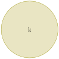

Section 4.3 Similarity and Enlargement
Subsection 4.3.1 Identifying Similar Figures and Their Properties
In this section, we will explore how to identify similar figures and understand their properties. Similar figures have the same shape but may differ in size. We will learn how to determine if two figures are similar and what properties they share.
Activity 4.3.2.
-

-
When naming similar triangles, list the vertices in a way that shows which angles are equal. For instance, if triangle \(ABC\) is similar to triangle \(DEF\text{,}\) it means angle \(A\) matches angle \(D\text{,}\) angle \(B\) matches angle \(E\text{,}\) and angle \(C\) matches angle \(F\text{.}\)
Example 4.3.1.
Solution.
\(PR\) corresponds to \(XZ\text{,}\) \(PQ\) corresponds to \(XY\text{,}\) and \(QR\) corresponds to \(YZ\text{.}\)
\begin{align*}
\text{Therefore,} \amp \frac{PR}{XZ}= \frac{PQ}{XY}= \frac {QR}{YZ} \\
=\amp \frac{8\, cm}{16\, cm}= \frac{12\, cm}{24\, cm}= \frac {6\, cm}{12\, cm} \\
=\amp \frac{1}{2}= \frac{1}{2}=\frac{1}{2}
\end{align*}
Since the ratio of the corresponding sides are equal, we conclude that triangle \(PQR\) is similar to triangle \(XYZ\text{.}\)
Example 4.3.2.
Subsection 4.3.2 Drawing Similar Figures
Activity 4.3.3.
-
In similar figures, the corresponding sides are in proportion, and the corresponding angles are equal. The ratio of corresponding sides can serve as a scale factor for creating similar figures.
Example 4.3.3.
\(ABC\) is a right angled triangle with \(AB = 8 \text{ cm}\text{,}\) \(BC = 6 \text{ cm}\text{,}\) and \(AC = 10 \text{ cm}\text{.}\) Draw another triangle \(DEF\) that is similar to triangle \(ABC\) with a scale factor of 2.

Solution.
-
The expected drawing will be a triangle \(DEF\) with sides \(DE = 16 \text{ cm}\text{,}\) \(EF = 12 \text{ cm}\text{,}\) and \(DF = 20 \text{ cm}\) since the scale factor is \(2\text{.}\)\begin{align*} DE= \amp 2\times AB=2\times 8=16 \text{ cm}\\ EF= \amp 2\times BC=2\times 6=12 \text{ cm}\\ DF= \amp 2\times AC=2\times 10=20 \text{ cm} \end{align*}
-
Corresponding interior angles of the triangles \(ABC\) and \(DEF\) must be equal, i.e., \(\angle A = \angle D\text{,}\) \(\angle B = \angle E\text{,}\) and \(\angle C = \angle F\text{.}\)
Subsection 4.3.3 Determining Properties of Enlargement of Different Figures
Activity 4.3.4.
-
The figure below shows the same rectangle as observed by the same learner after using a magnifying lens
-
The lens is considered to have transformed the rectangle in (1) to give the rectangle in (2). What do you notice?
-
In an enlargement, the object and its image remain similar. The linear scale factor of the enlargement determines the proportional transformation.
-
Lines connecting object points to their corresponding image points intersect at the center of enlargement. This property helps in determining the center of enlargement when both the object and its image are given.
-
To determine the scale factor, divide the length of the enlarged image by the corresponding length of the original object.
Example 4.3.4.
The figure below shows a triangle \(PQR\) and its image \(P'Q'R'\) after a transformation. Show that this is an enlargement and determine the scale factor of the enlargement.
Solution.
-
Join point \(P\) to \(P'\text{,}\) \(Q\) to \(Q'\text{,}\) and \(R\) to \(R'\text{.}\) Extend the lines connecting the points. The lines connecting the points intersect at a point, which is the center of enlargement.
-
\begin{align*} \text{Work out the ratio}\frac{OP'}{OP}= \amp \frac{OQ'}{OQ}=\frac{OR'}{OR} =3 \end{align*}The ratio of image distances to object distances is constant, which confirms that the transformation is an enlargement with a scale factor of \(3\text{.}\)
Subsection 4.3.4 Applying Properties of Enlargement to Draw Similar Objects and Their Images
Activity 4.3.5.
-
Join each of the points \(P\text{,}\) \(Q\text{,}\) and \(R\) to the point \(O\) and extend the lines.
-
Locate the points \(P'\text{,}\) \(Q'\text{,}\) and \(R'\) such that \(OP' = 2 \times OP\text{,}\) \(OQ' = 2 \times OQ\text{,}\) and \(OR' = 2 \times OR\text{.}\)
-
Compaire the triangle \(PQR\) with the triangle \(P'Q'R'\text{.}\) Share your observations with the class.
Example 4.3.5.
Obtain the image of a rectangle \(ABCD\) shown below under an enlargement with centre \(O\) and scale factor \(3\text{.}\)
Solution.
-
Now work out the length of \(OA'\) such that \(OA' = 3 \times OA\text{.}\) Locate the point \(A'\) on the extended line such that \(OA' = 3 \times OA\text{.}\)
-
Repeat the process for the points \(B\text{,}\) \(C\text{,}\) and \(D\text{.}\) Locate the points \(B'\text{,}\) \(C'\text{,}\) and \(D'\) such that \(OB' = 3 \times OB\text{,}\) \(OC' = 3 \times OC\text{,}\) and \(OD' = 3 \times OD\text{.}\)
-
Join the points \(A'\text{,}\) \(B'\text{,}\) \(C'\text{,}\) and \(D'\) to form the image of rectangle \(ABCD\) under an enlargement with centre \(O\) and scale factor \(3\text{.}\)
Example 4.3.6.
Obtain the image of a triangle \(PQR\) shown below under an enlargement with centre \(O\) and scale factor \(-2\text{.}\)
Solution.
-
Now work out the length of \(OP'\) such that \(OP' = -2 \times OP\text{.}\) Locate the point \(P'\) on the extended line such that \(OP' = 2 \times OP\text{.}\)
-
Repeat the process for the points \(Q\) and \(R\text{.}\) Locate the points \(Q'\) and \(R'\) such that \(OQ' = -2 \times OQ\) and \(OR' = 2 \times OR\text{.}\)
-
Join the points \(P'\text{,}\) \(Q'\text{,}\) and \(R'\) to form the image of triangle \(PQR\) under an enlargement with centre \(O\) and scale factor \(-2\text{.}\)
Subsection 4.3.5 Determining The Linear Scale Factor of Similar Figures
Activity 4.3.6.
(a)
Draw triangle \(ABC\) with the following side lengths as shown in the figure below (not drawn to scale):
(b)
Draw another triangle \(PQR\) with the following side lengths as shown in the figure below (not drawn to scale):
(c)
(d)
(e)
(f)
\(\textbf{Linear Scale Factor} = \frac{\textbf{Length of Side of an image }} {\textbf{Length of Corresponding Side of the object }}\)
Example 4.3.7.

Solution.
(ii) \(AB\) corresponds to \(PQ\text{,}\) \(BC\) corresponds to \(QR\text{,}\) and \(AC\) corresponds to \(PR\text{.}\)
\begin{align*}
\text{Therefore,} \amp \frac{AB}{PQ}= \frac{AC}{PR}= \frac {BC}{QR} \\
=\amp \frac{6\, cm}{y}= \frac{9\, cm}{12\, cm}= \frac {x}{14\, cm} \\
\frac{6\, cm}{y}=\amp \frac{9\, cm}{12\, cm}\\
y \times 9\, cm= \amp 6\, cm \times 12\, cm \\
y= \amp \frac{72\, cm^2}{9\, cm} \\
y =\amp 8\, cm \\
\text{Therefore PQ}= \amp 8 cm\\
\frac{9\, cm}{12\, cm}=\amp \frac{x}{14\, cm}\\
x \times 12\, cm= \amp 9\, cm \times 14\, cm \\
x= \amp \frac{126\, cm^2}{12\, cm} \\
x =\amp 10.5\, cm \\
\text{Therefore BC}= \amp 10.5\, cm
\end{align*}